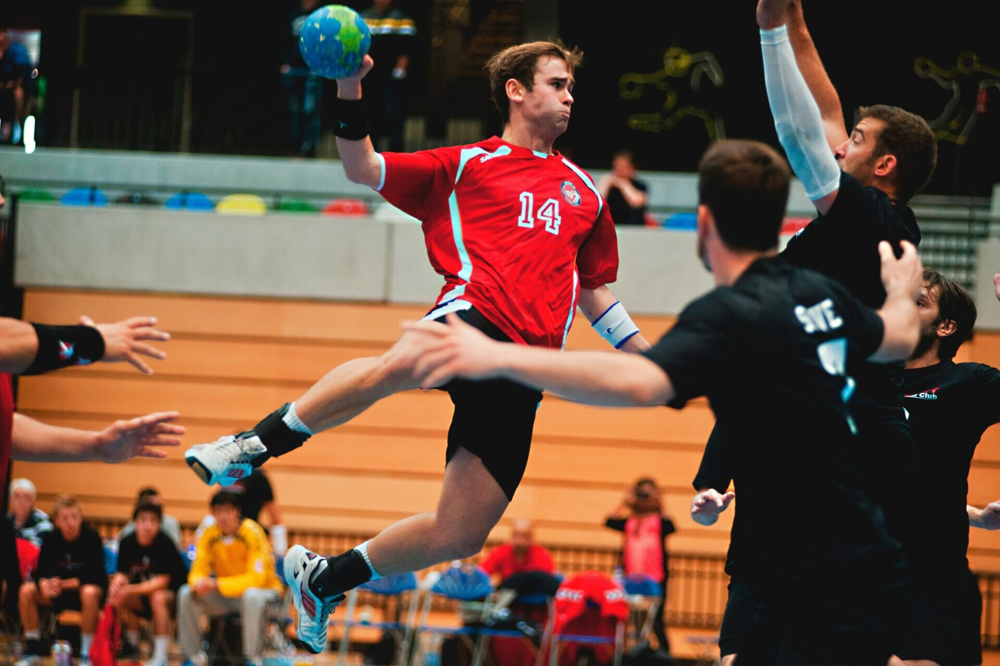
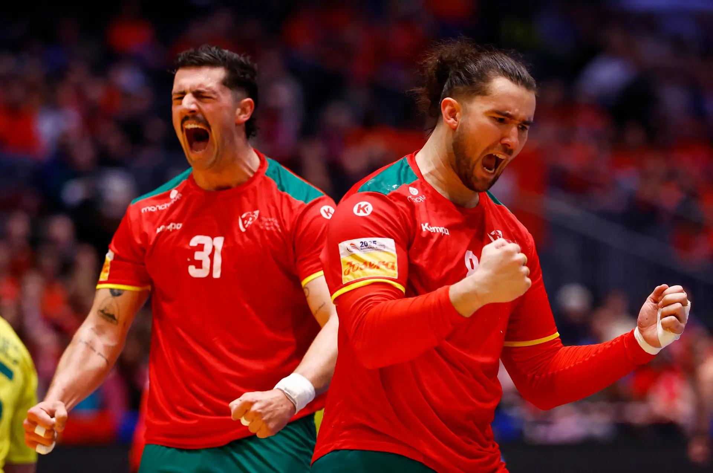
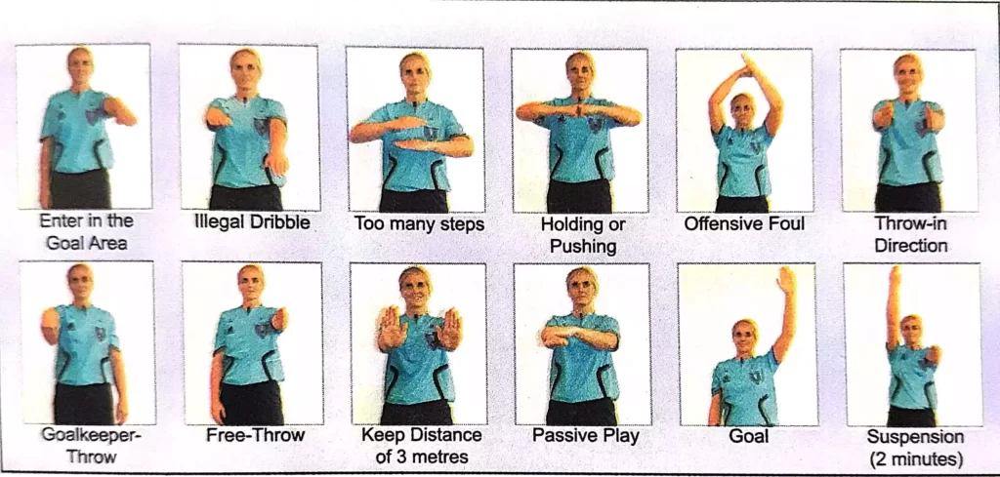
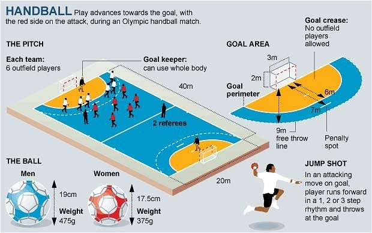

O andebol, como o conhecemos hoje, é um desporto dinâmico e emocionante, mas as suas raízes podem ser traçadas até jogos antigos que envolviam o uso das mãos e uma bola. Civilizações como a Grécia Antiga e a Roma Antiga praticavam jogos semelhantes, como o "Harpaston" e o "Palla" respetivamente, que já exigiam destreza com as mãos e coordenação.
No entanto, a forma moderna do andebol começou a tomar forma no final do século XIX, com o dinamarquês Holger Nielsen e o alemão Max Heiser a serem figuras chave no seu desenvolvimento. Em 1898, Nielsen criou o "håndbold", um jogo para mulheres que utilizava as mãos e tinha regras simples. Pouco depois, em 1917, Heiser introduziu o "Torball", um jogo de campo para mulheres, que rapidamente evoluiu para o "Handball" (andebol de 11), popularizado pelo alemão Carl Schelenz em 1919.
O andebol de 11, jogado em campos de futebol, foi o formato predominante nas primeiras décadas do século XX e chegou a ser um desporto olímpico nos Jogos de Berlim em 1936. Contudo, as condições climatéricas e a popularidade do futebol levaram ao declínio do andebol de 11, dando lugar à ascensão do andebol de 7, jogado em recintos fechados. Este formato mais rápido e tático rapidamente conquistou adeptos e tornou-se a versão dominante do desporto.
A Federação Internacional de Andebol (IHF - International Handball Federation) foi fundada em 1946, e desde então, o andebol de 7 tem crescido exponencialmente, sendo atualmente um dos desportos de equipa mais populares globalmente, com campeonatos mundiais e europeus de grande prestígio e uma presença constante nos Jogos Olímpicos desde 1972.

O andebol chegou a Portugal na década de 1920, com o campeonato nacional a ser criado em 1951.
Portugal teve dificuldades a competir internacionalmente, no entanto, isso tem vindo a mudar recentemente, com jogadores como Alexandre Cavalcanti, com a melhor classificação de sempre num Europeu em 2020, estando neste momento com uma equipa que pode ser considerada a melhor de sempre.
Isto pode ser comprovado pela prestação da seleção nacional na mais recente competição internacional, no mundial de 2025, em que Portugal terminou num histórico 4º lugar, melhorando significativamente o 10º lugar de 2021.

O jogo tem 2 partes de 30 minutos, podendo ser menores para jogadores com menos de 16 anos.
Cada equipa tem 7 jogadores, incluindo 1 guarda-redes.
Se a bola tocar abaixo do joelho do jogador é falta
Um jogador pode estar com a bola na mão por um máximo de 3 segundos, só podendo dar três passos.
É permitido driblar, sendo que depois de agarrar a bola só se pode dar três passos.
É permitido contacto físico leve, mas empurrões ou puxões são falta.
Não existe limite de substituições.
É concedido um livre de 7m em caso de faltas graves que impeçam claras oportunidades de golo. (Com exceções, por exemplo caso o defensor contacte o adversário enquanto estiver dentro da área, é considerado livre de 7 metros).
Apenas o guarda-redes pode estar na área de 6 metros.
Um jogador de campo pode saltar para dentro da área para rematar, desde que largue a bola antes de tocar no chão.

Depois de um golo a bola é reposta no meio-campo, a equipa que sofreu o golo tem que ter todos os jogadores atrás da linha do meio, os jogadores adversários não precisam estar na sua metade para a bola ser reposta em jogo.
Caso a bola esteja a saltitar dentro da de 6 metros, um jogador de campo pode desde de que não toque na área, caso esteja parada, a bola só pode ser jogada pelo guarda-redes
Sanções disciplinares:
Advertência (cartão amarelo): Para faltas menores.
Exclusão 2min: Para faltas graves ou reincidências.
Cartão Vermelho: Comportamento Antidesportivo ou acumulação de três 2min.
Se, durante o passe do guarda-redes para o meio-campo para continuar depois de um golo sofrido, a bola bater num jogador da equipa adversária, é assinalado 2 minutos.

Selecione uma opção para pesquisar equipas, jogadores e resultados.
Assista aos melhores momentos e jogos completos nos canais oficiais.
Mantenha-se atualizado com o mundo do andebol.
Gerencie suas preferências e histórico de equipas.
Bem-vindo à Viva Andebol. Ao aceder e utilizar a nossa aplicação, concorda com os seguintes termos e condições, bem como com a nossa política de privacidade. Leia-os atentamente antes de continuar a utilizar os nossos serviços.
A Viva Andebol recolhe informações mínimas e essenciais para o funcionamento da aplicação, como as suas preferências de idioma e modo de visualização (claro/escuro). Não recolhemos dados pessoais sensíveis, nem partilhamos as suas informações com terceiros para fins de marketing. Poderemos recolher dados de utilização anónimos para melhorar a sua experiência e o desempenho da aplicação.
As informações recolhidas são utilizadas exclusivamente para personalizar a sua experiência na aplicação, guardar as suas definições e, quando aplicável, para analisar tendências de uso de forma agregada e anónima, com o objetivo de otimizar a aplicação.
A Viva Andebol poderá utilizar cookies ou tecnologias semelhantes para guardar as suas preferências (ex: modo escuro, idioma) e para garantir a funcionalidade da aplicação. Ao utilizar a aplicação, concorda com o uso destas tecnologias. Pode gerir as definições de cookies no seu navegador, embora isso possa afetar a funcionalidade da aplicação.
A nossa aplicação pode conter links para websites ou serviços de terceiros (ex: websites de ligas, canais do YouTube). Não somos responsáveis pelas práticas de privacidade ou conteúdo desses terceiros. Recomendamos que reveja as políticas de privacidade de quaisquer websites externos que visite.
Reservamo-nos o direito de atualizar esta política de privacidade periodicamente. Quaisquer alterações serão publicadas nesta página. A sua continuação de uso da aplicação após tais alterações constitui a sua aceitação dos novos termos.
Se tiver alguma questão sobre estes termos ou a nossa política de privacidade, por favor contacte-nos através do email de suporte: suporte.vivaandebol@email.com.
Voltar